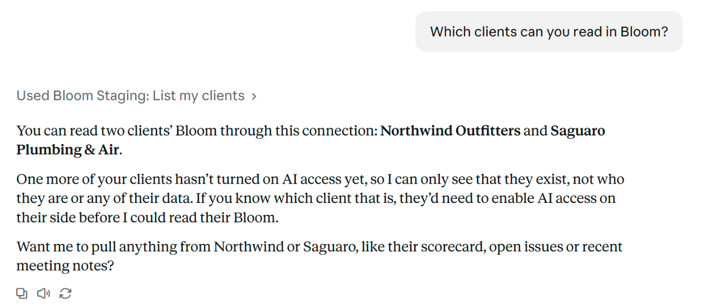
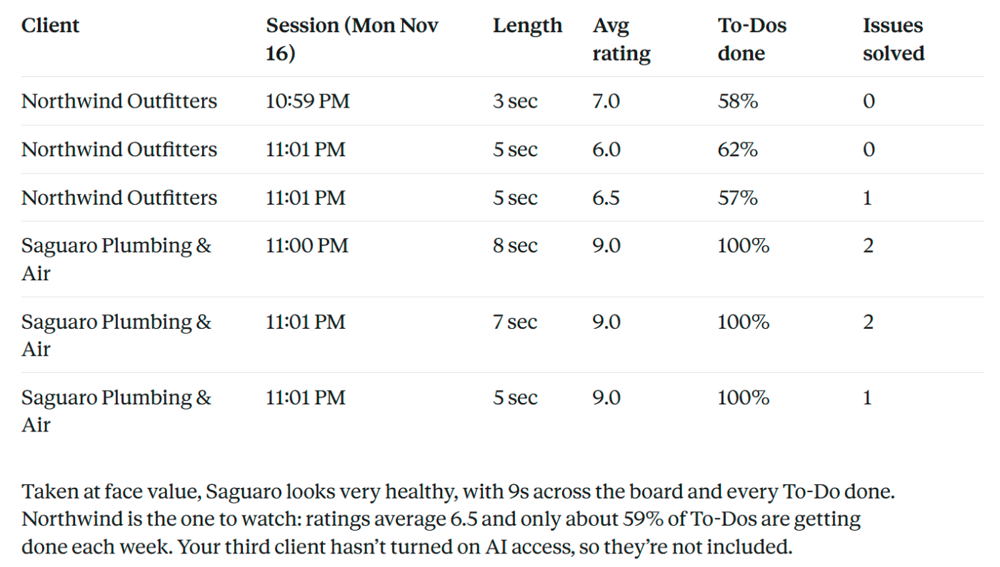
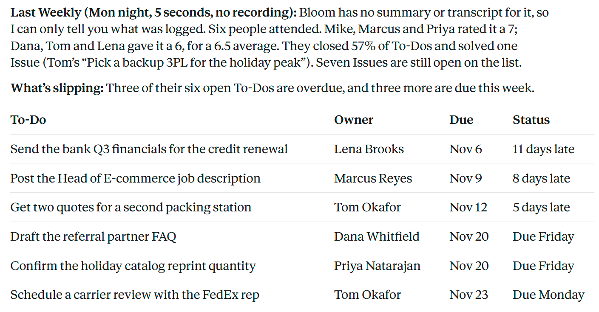
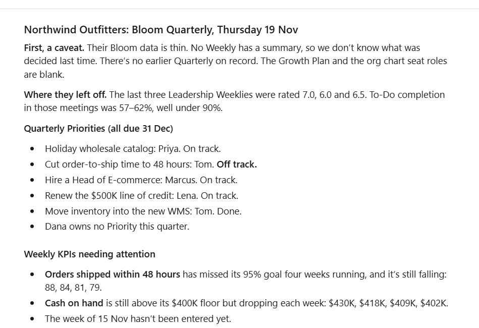
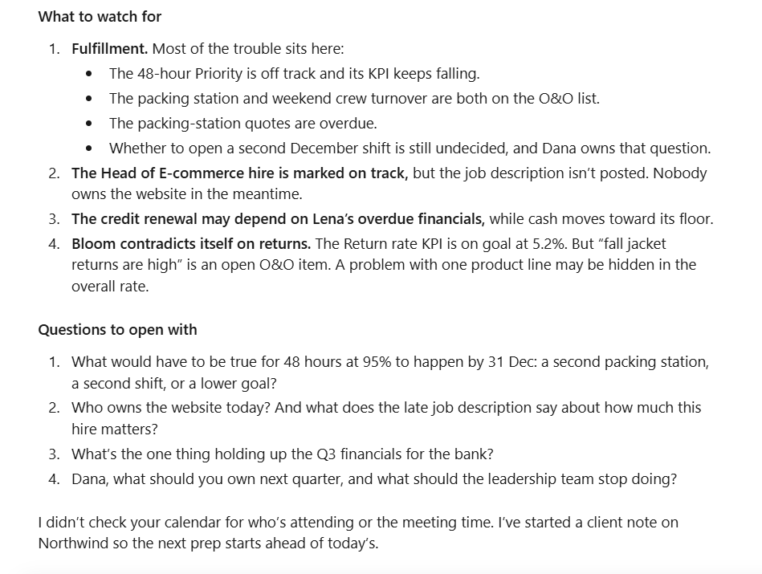
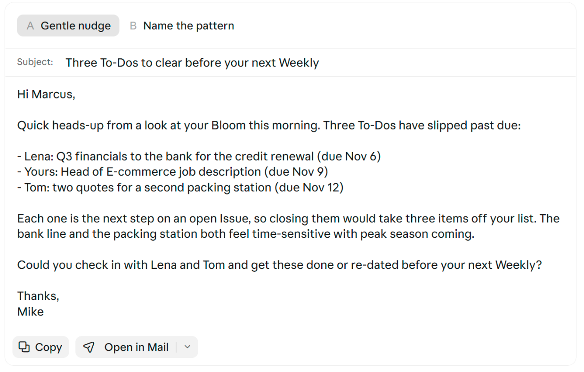
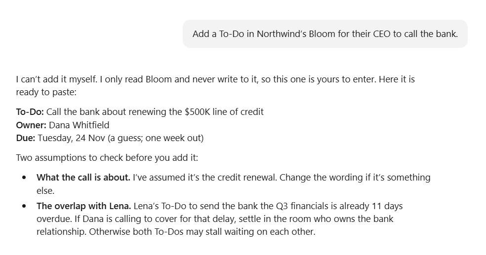

Bloom coach workshop
Hire your
assistant.
Tuesday, 17 November 2026 · Dunes II, Hotel Valley Ho
Tuesday, 17 November 2026 · Dunes II, Hotel Valley Ho
✓ When you see it, help your neighbor.
They speak second—the moment you say hello, you’ll see they already know you.
You never pick a specialist. Say what you need—your assistant figures out who does it.
✓ It wires them into the team for you. Nothing to configure, ever.
Bring anything broken, and anything you want your assistant to do. Bloom at 2:00.
One connection that lets your assistant read what your clients committed to.
Beta. Something breaks this hour? Bring it to Kelly at 3:00.
Outdoor gear retailer. Shipping is slipping.
Heating, cooling and plumbing. Healthy.
Bloom counts it, but won’t name it.
Bloom’s test site. Set up last night, so every meeting lasted a few seconds.







✓ When it answers, help your neighbor.
| No “Add custom connector” button | Your workspace owner adds Bloom once. Then you connect. |
| Confirm page says Bloom isn’t available | Your firm isn’t turned on yet. We’ll flag it for Mike. |
| It says you didn’t connect from your firm | You picked a client. Remove Bloom, add it again, pick your firm. |
| No clients listed, or one is missing | They haven’t opted in yet. That’s the 2:50 conversation. |
| Bloom is connected more than once | Remove them all. Connect once, from your firm. |
✓ More on your handout: your longest-open O&O items, empty seats on your org chart.
Pilot. We’re starting small. Tell us which clients will say yes.
What they get: sessions that start where you left off, follow-ups on what they actually committed to, and trouble spotted before it’s a crisis.